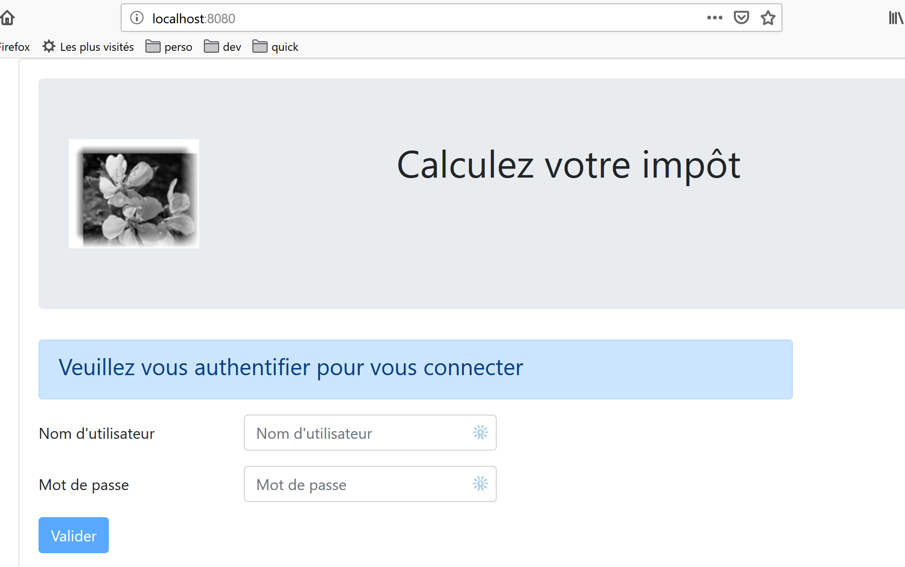
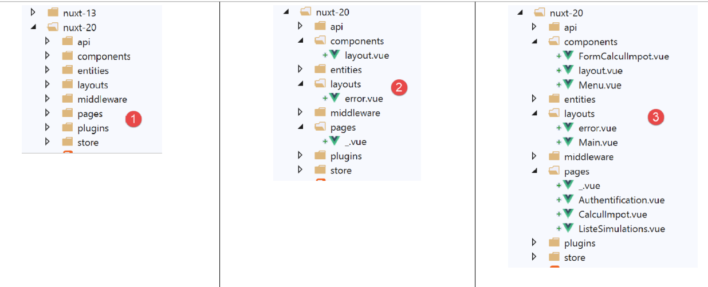
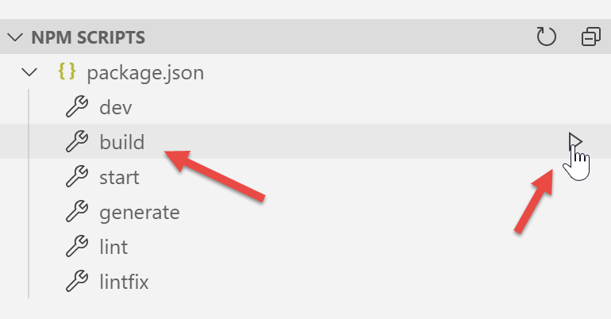
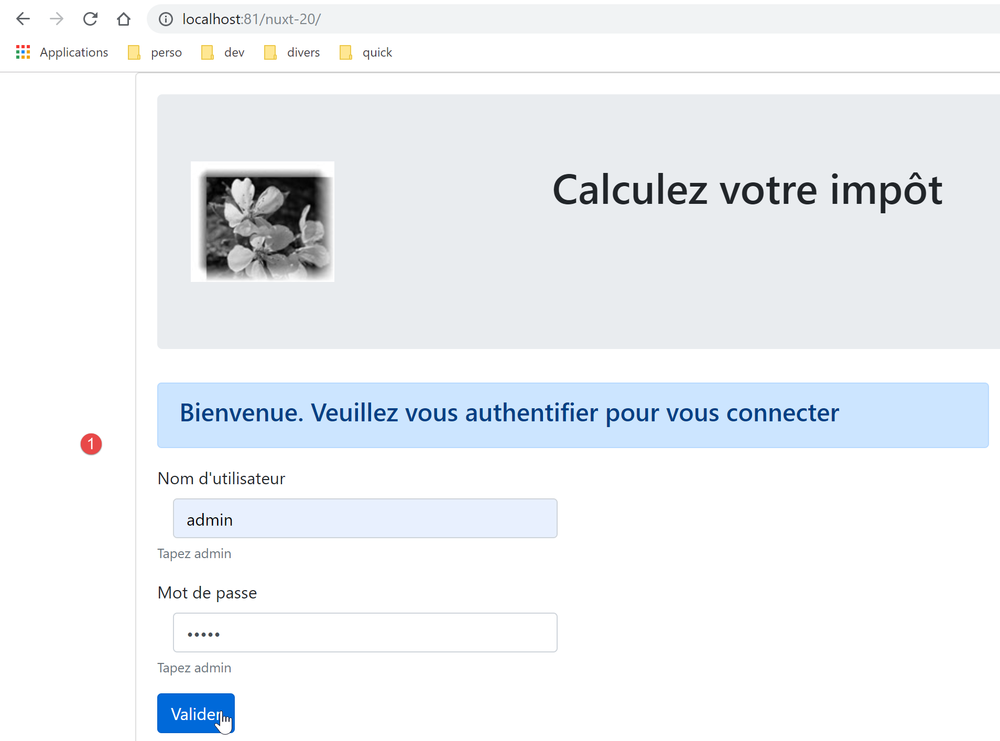
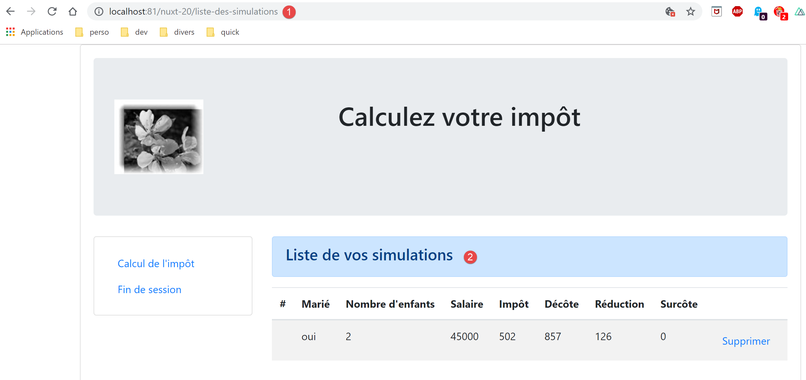
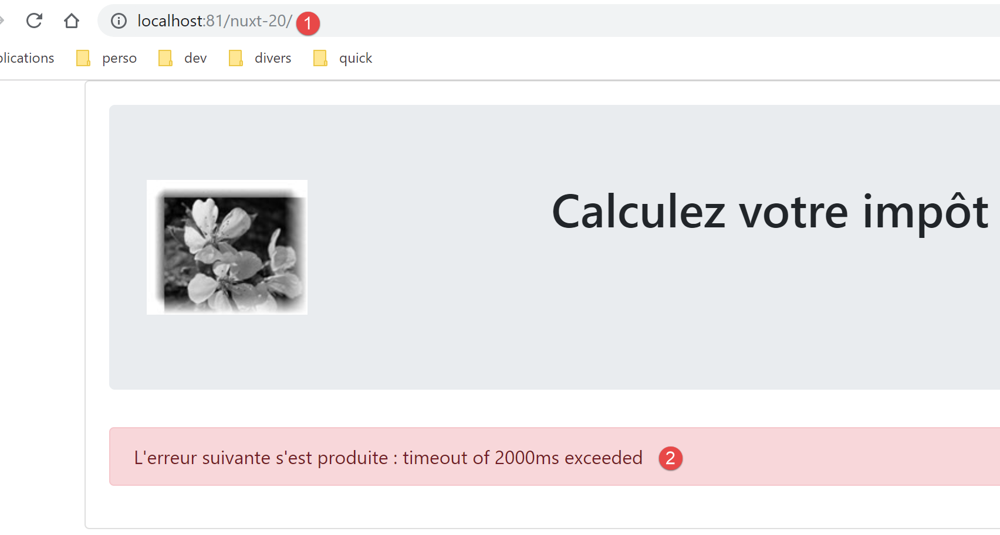
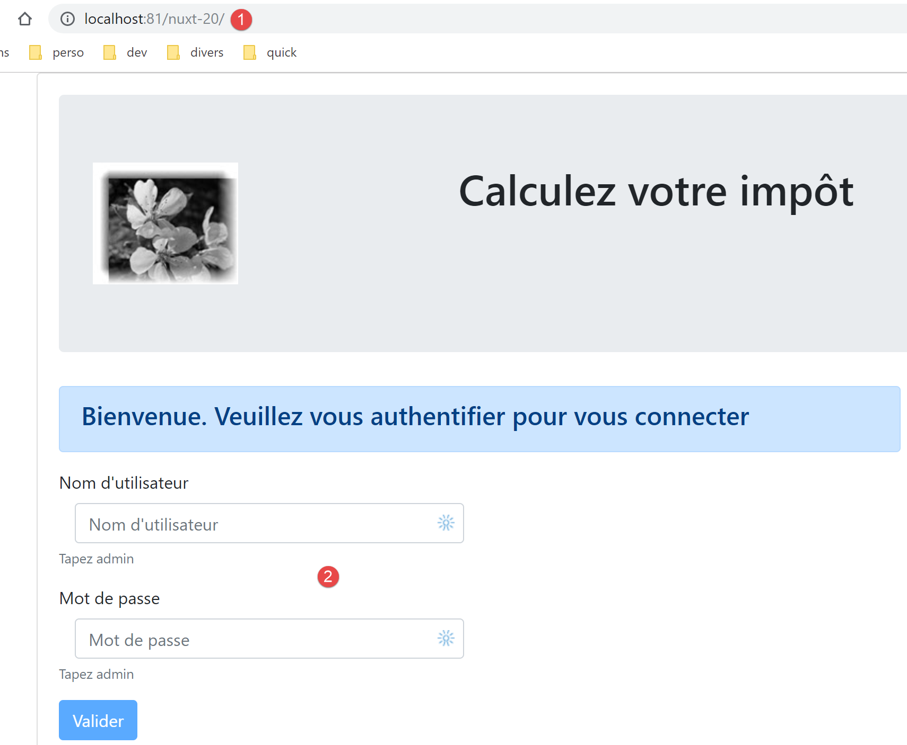
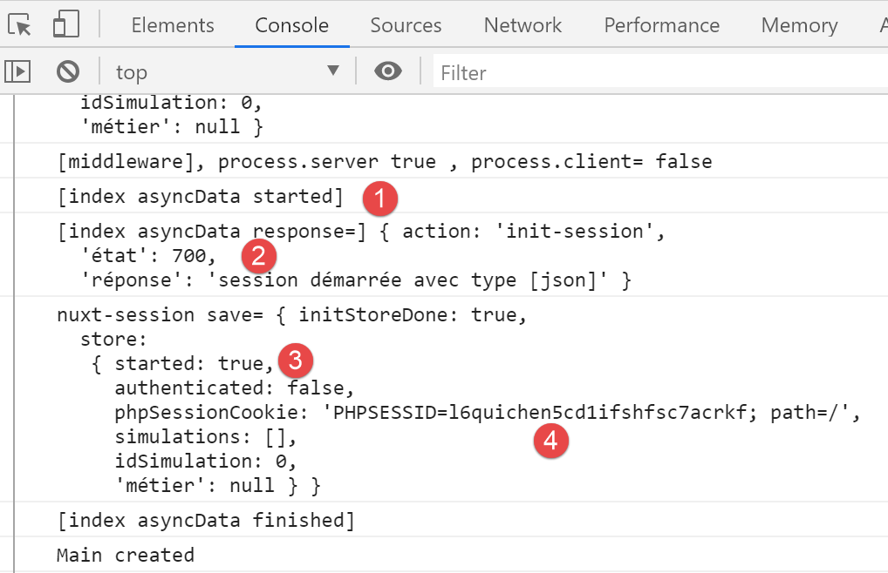

17. مثال [nuxt-20]: نقل المثال [vuejs-22]
17.1. Présentation
نقترح هنا نقل المثال [vuejs-22] الذي كان تطبيقًا [vue.js] من النوع SPA، في سياق [nuxt] SSR. كان [vuejs-22] تطبيقًا عميلًا لخادم حساب الضرائب الذي كان يعرض العروض التالية:
الطريقة الأولى هي طريقة المصادقة:

الطريقة الثانية هي طريقة حساب الضريبة:

الواجهة الثالثة هي التي تعرض قائمة المحاكاة التي أجراها المستخدم:

تُظهر الشاشة أعلاه أنه يمكن حذف المحاكاة رقم 1. عندئذٍ نحصل على العرض التالي:

إذا قمنا الآن بحذف المحاكاة الأخيرة، نحصل على العرض الجديد التالي:

سنقوم بنقل التطبيق [vuejs-22] إلى التطبيق [nuxt-20] بشكل تدريجي. لن نعيد شرح أكواد [vuejs-22]. يُرجى من القارئ إعادة قراءة الوثيقة |مقدمة إلى إطار العمل VUE.JS من خلال المثال|. ومن المفترض أن توضح الخطوات المختلفة الفروق بين تطبيق [vuejs] وتطبيق [nuxt].
17.2. الخطوة 1
يتم الحصول على مشروع [nuxt-20] في البداية عن طريق نسخ مشروع [nuxt-12]. ويعد هذا المشروع نقطة انطلاق جيدة:
- فهو قادر على التواصل مع خادم حساب الضريبة؛
- يدير بشكل صحيح الأخطاء التي يرسلها الخادم؛
- يستطيع كل من العميل والخادم [nuxt] التواصل عبر جلسة [nuxt]؛
لذلك لدينا بنية تحتية جيدة للبدء. يجب أن يكون عملنا الرئيسي هو تعديل:
- الصفحات. سنأخذ صفحات مشروع [vuejs-22] التي سيتعين تكييفها مع البيئة الجديدة؛
- إدارة المتجر. من المفترض أن تظهر معلومات إضافية (قائمة المحاكاة) وقد تصبح معلومات أخرى غير ضرورية؛
- إدارة توجيه العميل والخادم [nuxt]؛
لذا، أولاً، نقوم بإنشاء المشروع [nuxt-20] عن طريق نسخ المشروع [nuxt-12]:

ثم يتم حذف الصفحات والمكونات التي لم تعد ضرورية [2]:
- يختفي المكون [components/navigation]؛
- يختفي التخطيط [layout/default]؛
- تختفي الصفحات [index, authentification, get-admindata, fin-session]؛
ثم ندمج في [nuxt-20] عناصر من [vuejs-22] [3]:
- تنتقل الصفحات الثلاث [Authentification, CalculImpot, ListeSimulations] من التطبيق [vuejs-22] إلى المجلد [pages]؛
- تنتقل مكونات [FormCalculImpot, Menu, Layout] من التطبيق [vuejs-22] إلى المجلد [components]؛
- الصفحة [Main] من [vuejs-22] التي كانت تُستخدم كـ [layout] في التطبيق [vuejs-22] تُنقل إلى المجلد [layouts]؛
يتم إعادة تسمية العناصر المدمجة [4]:

- في [layouts]، أصبح [Main] هو [default] لأنه الاسم الافتراضي لتخطيط تطبيق [nuxt]؛
- في [pages]، أصبحت الصفحة [Authentification] هي [index]، لأن [Authentification] كانت تؤدي هذا الدور في التطبيق [vuejs-22]؛
في هذه المرحلة، يمكننا تجميع المشروع لرؤية الأخطاء الأولى. نقوم بتعديل الملف [nuxt.config] من المثال [nuxt-12] من أجل تشغيل [nuxt-20] من الآن فصاعدًا:
export default {
mode: 'universal',
/*
** Headers of the page
*/
head: {
title: 'Introduction à [nuxt.js]',
meta: [
{ charset: 'utf-8' },
{ name: 'viewport', content: 'width=device-width, initial-scale=1' },
{
hid: 'description',
name: 'description',
content: 'ssr routing loading asyncdata middleware plugins store'
}
],
link: [{ rel: 'icon', type: 'image/x-icon', href: '/favicon.ico' }]
},
/*
** Customize the progress-bar color
*/
loading: false,
/*
** Global CSS
*/
css: [],
/*
** Plugins to load before mounting the App
*/
plugins: [
{ src: '@/plugins/client/plgSession', mode: 'client' },
{ src: '@/plugins/server/plgSession', mode: 'server' },
{ src: '@/plugins/client/plgDao', mode: 'client' },
{ src: '@/plugins/server/plgDao', mode: 'server' },
{ src: '@/plugins/client/plgEventBus', mode: 'client' }
],
/*
** Nuxt.js dev-modules
*/
buildModules: [
// الوثيقة: https://github.com/nuxt-community/eslint-module
'@nuxtjs/eslint-module'
],
/*
** Nuxt.js modules
*/
modules: [
// الوثيقة: https://bootstrap-vue.js.org
'bootstrap-vue/nuxt'،
// الوثيقة: https://axios.nuxtjs.org/usage
'@nuxtjs/axios',
// https://www.npmjs.com/package/cookie-universal-nuxt
'cookie-universal-nuxt'
],
/*
** Axios module configuration
** See https://axios.nuxtjs.org/options
*/
axios: {},
/*
** Build configuration
*/
build: {
/*
** You can extend webpack config here
*/
extend(config, ctx) {}
},
// مجلد شفرة المصدر
srcDir: 'nuxt-20',
// الموجه
router: {
// جذر URL للتطبيق
base: '/nuxt-20/',
// برمجيات التوجيه الوسيطة
middleware: ['routing']
},
// الخادم
server: {
// منفذ الخدمة، 3000 افتراضيًا
port: 81,
// عناوين الشبكة المستمعة، افتراضيًا localhost: 127.0.0.1
// 0.0.0.0 = جميع عناوين الشبكة الخاصة بالجهاز
host: 'localhost'
},
// البيئة
env: {
// تكوين axios
timeout: 2000,
withCredentials: true,
baseURL: 'http://localhost/php7/scripts-web/impots/version-14'،
// تكوين ملف تعريف ارتباط الجلسة [nuxt]
maxAge: 60 * 5
}
}
ثم نقوم بإنشاء ملف [build] للمشروع:

الأخطاء المبلغ عنها هي التالية:
- تشير الخطأ في السطر 1 إلى الإشارة إلى صورة غير موجودة. سنستردها في [vuejs-22]؛
- الخطأ في السطر 2 يوضح أن المكون [./FormCalculImpot] غير موجود. وبالفعل، أصبح هذا المكون موجودًا الآن في [@/components/form-calcul-impot]؛
- تشير الأخطاء في الأسطر [3-5] إلى أن المكون [./Layout] غير موجود. وبالفعل، أصبح هذا المكون موجودًا الآن في [@/components/layout]؛
- تشير أخطاء الأسطر [6-7] إلى أن المكون [./Menu] غير موجود. وبالفعل، أصبح اسمه الآن [@/components/menu]؛
نضيف الصورة [assets/logo.jpg] إلى المشروع [nuxt-20]:

بالإضافة إلى ذلك، سنقوم بتصحيح مسار المكونات في جميع الصفحات. لنأخذ صفحة [calcul-impot] كمثال:
<!-- تعريف HTML للطريقة -->
<template>
<div>
<Layout :left="true" :right="true">
<!-- نموذج حساب الضريبة على اليمين -->
<FormCalculImpot slot="right" @resultatObtenu="handleResultatObtenu" />
<!-- قائمة التنقل على اليسار -->
<Menu slot="left" :options="options" />
</Layout>
<!-- منطقة عرض نتائج حساب الضريبة أسفل النموذج -->
<b-row v-if="résultatObtenu" class="mt-3">
<!-- منطقة فارغة من ثلاثة أعمدة -->
<b-col sm="3" />
<!-- منطقة من تسعة أعمدة -->
<b-col sm="9">
<b-alert show variant="success">
<span v-html="résultat"></span>
</b-alert>
</b-col>
</b-row>
</div>
</template>
<script>
// الواردات
import FormCalculImpot from './FormCalculImpot'
import Menu from './Menu'
import Layout from './Layout'
export default {
// المكونات المستخدمة
components: {
Layout,
FormCalculImpot,
Menu
},
تصبح الأرقام الثلاثة [import] في الأسطر 26-28 كما يلي:
// الاستيرادات
import FormCalculImpot from '@/components/form-calcul-impot'
import Menu from '@/components/menu'
import Layout from '@/components/layout'
نقوم بالتحقق من [import] لجميع المكونات والتخطيطات والصفحات وتصحيحها إذا لزم الأمر. بمجرد إجراء هذه التصحيحات، يمكننا محاولة إنشاء [build] جديد. عادةً ما لا تكون هناك أخطاء بعد ذلك.
يمكننا بعد ذلك محاولة التنفيذ:

تظهر أخطاء:
نلاحظ أن الأمر [dev] المقترن بالوحدة النمطية [eslint] أكثر صرامة، من الناحية النحوية، من الأمر [build]. هنا، تتطلب أن يُكتب عامل المقارنة [!=] على أنه [!==]، وهو عامل أكثر صرامة (يتحقق أيضًا من نوع المعاملات). تحدث هذه الأخطاء في الصفحة [index.vue].
نقوم بتصحيح الأخطاء المذكورة أعلاه ونعيد تشغيل المشروع. عندئذٍ نحصل على تحذير من الوحدة النمطية [eslint]:

نقوم بتصحيح هذا الخطأ باستخدام [Quick fix] من الوحدة النمطية [eslint] [2].
نعيد تشغيل المشروع. لم يعد هناك خطأ في الترجمة. ثم نطلب URL [http://localhost:81/nuxt-20/] باستخدام متصفح. نحصل على خطأ في التشغيل:

يوجد الخطأ في [index.vue] [2]. يعود الخطأ [1] إلى حقيقة أنه في [vuejs-22]، كانت الطبقة [dao] متاحة في [this.$dao] بينما في [nuxt-12] التي اعتمدنا بنيتها التحتية، فهي متاحة في الوظيفة [this.$dao()].
الخطأ موجود في الوظيفة [created] من دورة حياة الصفحة [index]:

في الوقت الحالي، نكتفي بإعادة تسمية [created] إلى [created2] حتى لا يتم تنفيذ وظيفة دورة الحياة [created] [3].
نحفظ التعديل ونعيد تحميل الصفحة [index] في المتصفح. هذه المرة نجح الأمر:

17.3. الخطوة 2
كانت صفحات المشروع [vuejs-22] تستخدم العناصر المُدرجة التالية:
- $dao: لطبقة [dao] للعميل [vue.js]؛
- $session: لجلسة عمل مخزنة في [localStorage] للمتصفح؛
لم تعد هذه العناصر موجودة في البنية التحتية لمشروع [nuxt-12] الذي قمنا بنسخه:
- يوجد الآن طبقتان [dao]، إحداهما للعميل [nuxt]، والأخرى للخادم [nuxt]. وكلاهما متاحان عبر وظيفة مُدرجة تُسمى [$dao]. وهذا يعني أنه في صفحات التطبيق، يجب استبدال [this.$dao] بـ [this.$dao()]؛
- لم تعد الجلسة [nuxt] التي يديرها التطبيق [nuxt-20] لها أي علاقة بالكائن [$session] فيتطبيق [vuejs-22] حيث لم يكن هناك مفهوم لملف تعريف ارتباط الجلسة. ومع ذلك، فإن لهما وظيفة مماثلة: تخزين المعلومات الدائمة خلال إجراءات المستخدم. تخزن الجلسة [nuxt] المعلومات في المخزن بدلاً من تخزينها مباشرة في الجلسة. في صفحات التطبيق، يجب استبدال [this.$session] بـ [this.$store] عندما يتعلق الأمر بتخزين المعلومات في الجلسة، وبـ [this.$session()] عندما يتعلق الأمر بمعالجة الجلسة نفسها؛
- لمعرفة حالة خاصية P في المخزن، يجب كتابة [this.$store.state.P]؛
- لتغيير الخاصية P للمخزن، يجب كتابة [this.$store.commit(‘replace’, {P:value}]؛
نقوم بإجراء هذه التعديلات في الصفحة [index]:
<!-- تعريف HTML للطريقة -->
<template>
<Layout :left="false" :right="true">
<template slot="right">
<!-- نموذج HTML - يتم نشر قيمه باستخدام الإجراء [authentifier-utilisateur] -->
<b-form @submit.prevent="login">
<!-- العنوان -->
<b-alert show variant="primary">
<h4>Bienvenue. Veuillez vous authentifier pour vous connecter</h4>
</b-alert>
<!-- السطر الأول -->
<b-form-group label="Nom d'utilisateur" label-for="user" label-cols="3">
<!-- منطقة إدخال المستخدم -->
<b-col cols="6">
<b-form-input id="user" v-model="user" type="text" placeholder="Nom d'utilisateur" />
</b-col>
</b-form-group>
<!-- السطر الثاني -->
<b-form-group label="Mot de passe" label-for="password" label-cols="3">
<!-- حقل إدخال كلمة المرور -->
<b-col cols="6">
<b-input id="password" v-model="password" type="password" placeholder="Mot de passe" />
</b-col>
</b-form-group>
<!-- السطر الثالث -->
<b-alert v-if="showError" show variant="danger" class="mt-3">L'erreur suivante s'est produite : {{ message }}</b-alert>
<!-- زر من النوع [submit] في السطر الثالث -->
<b-row>
<b-col cols="2">
<b-button :disabled="!valid" variant="primary" type="submit">Valider</b-button>
</b-col>
</b-row>
</b-form>
</template>
</Layout>
</template>
<!-- ديناميكية العرض -->
<script>
/* eslint-disable no-console */
import Layout from '@/components/layout'
export default {
// المكونات المستخدمة
components: {
Layout
},
// حالة المكون
data() {
return {
// المستخدم
user: '',
// كلمة المرور الخاصة به
password: '',
// التحكم في عرض رسالة الخطأ
showError: false,
// رسالة الخطأ
message: ''
}
},
// الخصائص المحسوبة
computed: {
// المدخلات الصالحة
valid() {
return this.user && this.password && this.$store.state.started
}
},
// دورة الحياة: تم إنشاء المكون للتو
mounted() {
// eslint-disable-next-line
console.log("Authentification mounted");
// هل يمكن للمستخدم إجراء محاكاة؟
if (this.$store.state.started && this.$store.state.authenticated && this.$métier.taxAdminData) {
// إذن يمكن للمستخدم إجراء محاكاة
this.$router.push({ name: 'calculImpot' })
// العودة إلى حلقة الأحداث
return
}
// إذا كانت الجلسة jSON قد بدأت بالفعل، فلا يتم إعادة تشغيلها مرة أخرى
if (!this.$store.state.started) {
// بدء الانتظار
this.$emit('loading', true)
// يتم تهيئة الجلسة مع الخادم - طلب غير متزامن
// يتم استخدام الوعد المقدم بواسطة طرق الطبقة [dao]
this.$dao()
// يتم تهيئة جلسة jSON
.initSession()
// تم الحصول على الرد
.then((response) => {
// نهاية الانتظار
this.$emit('loading', false)
// تحليل الرد
if (response.état !== 700) {
// يتم عرض الخطأ
this.message = response.réponse
this.showError = true
// العودة إلى حلقة الأحداث
return
}
// بدأت الجلسة
this.$store.commit('replace', { started: true })
console.log('[authentification], session=', this.$session())
})
// في حالة حدوث خطأ
.catch((error) => {
// يتم رفع الخطأ إلى العرض [Main]
this.$emit('error', error)
})
// في جميع الحالات
.finally(() => {
// يتم حفظ الجلسة
this.$session().save()
})
}
},
// مديري الأحداث
methods: {
// ----------- المصادقة
async login() {
try {
// بدء الانتظار
this.$emit('loading', true)
// لم يتم المصادقة بعد
this.$store.commit('replace', { authenticated: false })
// المصادقة المعطلة لدى الخادم
const response = await this.$dao().authentifierUtilisateur(this.user, this.password)
// نهاية التحميل
this.$emit('loading', false)
// تحليل استجابة الخادم
if (response.état !== 200) {
// يتم عرض الخطأ
this.message = response.réponse
this.showError = true
// العودة إلى حلقة الأحداث
return
}
// لا توجد أخطاء
this.showError = false
// تمت المصادقة
this.$store.commit('replace', { authenticated: true })
// --------- يتم الآن طلب البيانات من إدارة الضرائب
// في البداية، لا توجد بيانات
this.$métier.setTaxAdminData(null)
// بدء الانتظار
this.$emit('loading', true)
// طلب معطل لدى الخادم
const response2 = await this.$dao().getAdminData()
// نهاية التحميل
this.$emit('loading', false)
// تحليل الرد
if (response2.état !== 1000) {
// عرض الخطأ
this.message = response2.réponse
this.showError = true
// العودة إلى حلقة الأحداث
return
}
// لا توجد أخطاء
this.showError = false
// يتم تخزين البيانات المستلمة في الطبقة [métier]
this.$métier.setTaxAdminData(response2.réponse)
// يمكن الانتقال إلى حساب الضريبة
this.$router.push({ name: 'calculImpot' })
} catch (error) {
// يتم إحالة الخطأ إلى المكون الرئيسي
this.$emit('error', error)
} finally {
// تحديث المخزن
this.$store.commit('replace', { métier: this.$métier })
// يتم حفظ الجلسة
this.$session().save()
}
}
}
}
</script>
نلاحظ النقاط التالية:
- السطر 69: تم تغيير اسم الدالة [created2] إلى [mounted]، وذلك حتى لا يقوم الخادم [nuxt] بتنفيذها (فهو لا ينفذ لا [beforeMount] ولا [mounted]). ولن يقوم بتنفيذها سوى العميل [nuxt] كما كان الحال مع المثال [vuejs-22]؛
- السطر 73: هناك إشارة إلى [this.$métier] الذي لا يوجد في الوقت الحالي؛
- السطر 75: لم نستخدم هذه الطريقة مطلقًا في تطبيق [nuxt]. سيتعين التحقق مما إذا كانت تعمل في سياق [nuxt]؛
- السطر 112، 172: في [vuejs-22]، تم حفظ جلسة المشروع بهذه الطريقة. مع المشروع [nuxt-20]، يجب أن تتلقى الطريقة [save] السياق الحالي. من المعروف أنه في صفحة [nuxt]، يكون الكائن [context] متاحًا في [this.$nuxt.context]؛
لذلك، يتم إعادة كتابة السطرين 112 و172 على النحو التالي:
this.$session().save(this.$nuxt.context)
تجدر الإشارة إلى أن هذا الكود غير مُحسّن. بدلاً من استخدام الدالة [this.$session()] عدة مرات، من الأفضل كتابة:
const session=this.$session()
ثم استخدام المتغير [session]. ويمكن تطبيق نفس المنطق على الدالة [this.$dao()].
بعد إجراء هذه التصحيحات، يمكننا إعادة تحميل URL [http://localhost:81/nuxt-20/] باستخدام متصفح. نحصل دائمًا على نفس الصفحة كما في السابق:

لنلقِ نظرة على سجلات المتصفح:

السجل [1] هو آخر سجل تم إنشاؤه بواسطة العميل [nuxt]. في [2]، نرى أن الخاصية [started] هي [vrai]، مما يعني أن الدالة [mounted] نجحت في بدء جلسة jSON مع خادم حساب الضريبة. ونلاحظ أيضًا أن المخزن يحتوي على خصائص يجب التخلي عنها أو إعادة تسميتها. تذكر أننا نستخدم المخزن الموجود في المثال [nuxt-12].
الآن، لنطلب مرة أخرى URL [http://localhost:81/nuxt-20/] في حين أن خادم حساب الضريبة لم يتم تشغيله. نحرص أولاً على حذف ملف تعريف الارتباط الخاص بجلسة العمل [nuxt]:

لقطة الشاشة أعلاه هي لقطة شاشة من متصفح Chrome. بعد القيام بذلك، يعطي ملف تعريف الارتباط URL [http://localhost:81/nuxt-20/] النتيجة التالية:

تمت معالجة الخطأ بشكل صحيح بواسطة المشروع [vuejs-22]. ولا تزال تتم معالجته بشكل صحيح بواسطة المشروع [nuxt-20].
17.4. الخطوة 3
الآن بعد أن أصبح لدينا صفحة المصادقة، يجب أن ننظر إلى الكود الذي يتم تنفيذه عندما ينقر المستخدم على الزر [Valider]:
// مديرو الأحداث
methods: {
// ----------- المصادقة
async login() {
try {
// بدء الانتظار
this.$emit('loading', true)
// لم يتم المصادقة بعد
this.$store.commit('replace', { authenticated: false })
// المصادقة المعطلة لدى الخادم
const response = await this.$dao().authentifierUtilisateur(this.user, this.password)
// نهاية التحميل
this.$emit('loading', false)
// تحليل استجابة الخادم
if (response.état !== 200) {
// يتم عرض الخطأ
this.message = response.réponse
this.showError = true
// العودة إلى حلقة الأحداث
return
}
// لا توجد أخطاء
this.showError = false
// تمت المصادقة
this.$store.commit('replace', { authenticated: true })
// --------- يتم الآن طلب البيانات من إدارة الضرائب
// في البداية، لا توجد بيانات
this.$métier.setTaxAdminData(null)
// بدء الانتظار
this.$emit('loading', true)
// طلب معطل لدى الخادم
const response2 = await this.$dao().getAdminData()
// نهاية التحميل
this.$emit('loading', false)
// تحليل الرد
if (response2.état !== 1000) {
// يتم عرض الخطأ
this.message = response2.réponse
this.showError = true
// العودة إلى حلقة الأحداث
return
}
// لا توجد أخطاء
this.showError = false
// يتم تخزين البيانات المستلمة في الطبقة [métier]
this.$métier.setTaxAdminData(response2.réponse)
// يمكن الانتقال إلى حساب الضريبة
this.$router.push({ name: 'calculImpot' })
} catch (error) {
// يتم إحالة الخطأ إلى المكون الرئيسي
this.$emit('error', error)
} finally {
// تحديث المخزن
this.$store.commit('replace', { métier: this.$métier })
// يتم حفظ الجلسة
this.$session().save(this.$nuxt.context)
}
}
}
يبدو أن المشكلة الرئيسية هنا هي عدم وجود البيانات [this.$métier]. لحل هذه المشكلة، سنقوم بما يلي:
- تضمين الفئة [Métier] من المثال [vuejs-22]. سنضعها في المجلد [api]؛
- إدراج دالة [$métier] في سياق العميل [nuxt] والتي ستتيح الوصول إلى هذه الفئة؛
أولاً، نسخ الفئة [Métier] إلى المجلد [api]:

بمجرد وجود الفئة [Métier] في المشروع، نقوم بإنشاء مكون إضافي جديد للعميل [nuxt]. سيقوم هذا المكون الإضافي المسمى [pluginMétier] بإدخال وظيفة [$métier] التي ستتيح الوصول إلى الفئة [Métier]:
/* eslint-disable no-console */
// يتم إنشاء نقطة وصول إلى الطبقة [métier]
import Métier from '@/api/client/Métier'
export default (context, inject) => {
// إنشاء مثيل للطبقة [métier]
const métier = new Métier()
// إدخال دالة [$métier] في السياق
inject('métier', () => métier)
// سجل
console.log('[fonction client $métier créée]')
}
وبعد ذلك، يمكننا تصحيح الصفحة [index]:
// دورة الحياة: تم إنشاء المكون للتو
mounted() {
// eslint-disable-next-line
console.log("Authentification mounted");
// هل يمكن للمستخدم إجراء محاكاة؟
if (this.$store.state.started && this.$store.state.authenticated && this.$métier().taxAdminData) {
// إذن يمكن للمستخدم إجراء محاكاة
this.$router.push({ name: 'calcul-impot' })
// العودة إلى حلقة الأحداث
return
}
// إذا كانت الجلسة jSON قد بدأت بالفعل، فلا يتم إعادة تشغيلها مرة أخرى
...
},
// مديرو الأحداث
methods: {
// ----------- المصادقة
async login() {
try {
// بدء الانتظار
this.$emit('loading', true)
// لم يتم المصادقة بعد
this.$store.commit('replace', { authenticated: false })
// المصادقة معطلة على الخادم
const response = await this.$dao().authentifierUtilisateur(this.user, this.password)
// نهاية التحميل
this.$emit('loading', false)
// تحليل استجابة الخادم
if (response.état !== 200) {
// يتم عرض الخطأ
this.message = response.réponse
this.showError = true
// العودة إلى حلقة الأحداث
return
}
// لا توجد أخطاء
this.showError = false
// تمت المصادقة
this.$store.commit('replace', { authenticated: true })
// --------- يتم الآن طلب البيانات من إدارة الضرائب
// في البداية، لا توجد بيانات
this.$métier().setTaxAdminData(null)
// بدء الانتظار
this.$emit('loading', true)
// طلب معطل لدى الخادم
const response2 = await this.$dao().getAdminData()
// نهاية التحميل
this.$emit('loading', false)
// تحليل الرد
if (response2.état !== 1000) {
// عرض الخطأ
this.message = response2.réponse
this.showError = true
// العودة إلى حلقة الأحداث
return
}
// لا توجد أخطاء
this.showError = false
// يتم تخزين البيانات المستلمة في الطبقة [métier]
this.$métier().setTaxAdminData(response2.réponse)
// يمكن الانتقال إلى حساب الضريبة
this.$router.push({ name: 'calcul-impot' })
} catch (error) {
// يتم إحالة الخطأ إلى المكون الرئيسي
this.$emit('error', error)
} finally {
// تحديث المخزن
this.$store.commit('replace', { métier: this.$métier() })
// يتم حفظ الجلسة
this.$session().save(this.$nuxt.context)
}
}
}
- السطور 43 و61 و69، تم استبدال [this.$métier] بـ [this.$métier()]؛
- السطران 8 و63: أصبح اسم الصفحة [CalculImpot] في المشروع [vuejs-22] هو الصفحة [calcul-impot] في المشروع [nuxt-20]؛
بعد إجراء هذه التصحيحات، يمكننا محاولة التحقق من صحة صفحة المصادقة:

الصفحة التي تم الحصول عليها هي التالية:

لقد حصلنا بالفعل على صفحة حساب الضريبة. الآن لنلقِ نظرة على السجلات:

في [2]، نرى أن عملية المصادقة قد تم تسجيلها بشكل صحيح. في [3-4]، نرى أنه تم استرداد البيانات [taxAdminData] التي تسمح بحساب الضريبة بواسطة الفئة [Métier].
17.5. الخطوة 4
دعونا نفحص الصفحة [calcul-impot] التي حصلنا عليها:
<!-- تعريف HTML للطريقة -->
<template>
<div>
<Layout :left="true" :right="true">
<!-- نموذج حساب الضريبة على اليمين -->
<FormCalculImpot slot="right" @resultatObtenu="handleResultatObtenu" />
<!-- قائمة التنقل على اليسار -->
<Menu slot="left" :options="options" />
</Layout>
<!-- منطقة عرض نتائج حساب الضريبة أسفل النموذج -->
<b-row v-if="résultatObtenu" class="mt-3">
<!-- منطقة فارغة من ثلاثة أعمدة -->
<b-col sm="3" />
<!-- منطقة من تسعة أعمدة -->
<b-col sm="9">
<b-alert show variant="success">
<span v-html="résultat"></span>
</b-alert>
</b-col>
</b-row>
</div>
</template>
<script>
// الاستيرادات
import FormCalculImpot from '@/components/form-calcul-impot'
import Menu from '@/components/menu'
import Layout from '@/components/layout'
export default {
// المكونات المستخدمة
components: {
Layout,
FormCalculImpot,
Menu
},
// التقرير الداخلي
data() {
return {
// خيارات القائمة
options: [
{
text: 'Liste des simulations',
path: '/liste-des-simulations'
},
{
text: 'Fin de session',
path: '/fin-session'
}
],
// نتيجة حساب الضريبة
résultat: '',
résultatObtenu: false
}
},
// دورة الحياة
created() {
// eslint-disable-next-line
console.log("CalculImpot created");
},
// طرق إدارة الأحداث
methods: {
// نتيجة حساب الضريبة
handleResultatObtenu(résultat) {
// يتم بناء النتيجة في سلسلة HTML
const impôt = "Montant de l'impôt : " + résultat.impôt + ' euro(s)'
const décôte = 'Décôte : ' + résultat.décôte + ' euro(s)'
const réduction = 'Réduction : ' + résultat.réduction + ' euro(s)'
const surcôte = 'Surcôte : ' + résultat.surcôte + ' euro(s)'
const taux = "Taux d'imposition : " + résultat.taux
this.résultat = impôt + '<br/>' + décôte + '<br/>' + réduction + '<br/>' + surcôte + '<br/>' + taux
// عرض النتيجة
this.résultatObtenu = true
// ---- تحديث المتجر [Vuex]
// محاكاة +
this.$store.commit('addSimulation', résultat)
// نقوم بحفظ الجلسة
this.$session.save()
}
}
}
</script>
- السطران 44 و48: روابط قائمة التنقل صحيحة. الصفحة [/fin-session] غير موجودة. كان المشروع [vuejs-22] يعالج هذه المشكلة باستخدام التوجيه. سنفعل الشيء نفسه مع المشروع [nuxt-20]؛
- السطر 76: هناك إشارة إلى تغيير [addSimulation] غير موجود في الوقت الحالي. سنقوم بإنشائه؛
- السطر 78: كما في الصفحة [index]، يجب كتابة [this.$session().save(this.$nuxt.context)]؛
لنقوم بتعديل المخزن [store/index]. وهو موروث من المشروع [nuxt-12]، وهو في الوقت الحالي كما يلي:
/* eslint-disable no-console */
// حالة المتجر
export const state = () => ({
// تم بدء الجلسة jSON
jsonSessionStarted: false,
// تم توثيق المستخدم
userAuthenticated: false,
// ملف تعريف ارتباط الجلسة PHP
phpSessionCookie: '',
// adminData
adminData: ''
})
// تغييرات في المخزن
export const mutations = {
// استبدال الحالة
replace(state, newState) {
for (const attr in newState) {
state[attr] = newState[attr]
}
},
// إعادة تعيين المخزن
reset() {
this.commit('replace', { jsonSessionStarted: false, userAuthenticated: false, phpSessionCookie: '', adminData: '' })
}
}
// إجراءات المخزن
export const actions = {
nuxtServerInit(store, context) {
// من ينفذ هذا الرمز؟
console.log('nuxtServerInit, client=', process.client, 'serveur=', process.server, 'env=', context.env)
// بدء الجلسة
initStore(store, context)
}
}
function initStore(store, context) {
// المخزن هو المخزن المراد تهيئته
// نسترد الجلسة
const session = context.app.$session()
// هل تم تهيئة الجلسة بالفعل؟
if (!session.value.initStoreDone) {
// يتم بدء مخزن جديد
console.log("nuxtServerInit, initialisation d'un nouveau store")
// يتم وضع المخزن في الجلسة
session.value.store = store.state
// تم تهيئة المخزن الآن
session.value.initStoreDone = true
} else {
console.log("nuxtServerInit, reprise d'un store existant")
// يتم تحديث المخزن بمخزن الجلسة
store.commit('replace', session.value.store)
}
// يتم حفظ الجلسة
session.save(context)
// سجل
console.log('initStore terminé, store=', store.state)
}
- السطور 3-27: سنستعيد الحالة والتغييرات الخاصة بالتطبيق [vuejs-22] (انظر المستند [3]):
// حالة المتجر
export const state = () => ({
// تم بدء الجلسة jSON
started: false,
// تم توثيق المستخدم
authenticated: false,
// ملف تعريف ارتباط الجلسة PHP
phpSessionCookie: '',
// قائمة المحاكاة
simulations: [],
// رقم آخر محاكاة
idSimulation: 0,
// طبقة [métier]
métier: null
})
// تغيرات الستارة
export const mutations = {
// استبدال الحالة
replace(state, newState) {
for (const attr in newState) {
state[attr] = newState[attr]
}
},
// إعادة تعيين المخزن
reset() {
this.commit('replace', { started: false, authenticated: false, phpSessionCookie: '', idSimulation: 0, simulations: [], métier: null })
},
// حذف السطر رقم الفهرس
deleteSimulation(state, index) {
// eslint-disable-next-line no-console
console.log('mutation deleteSimulation')
// حذف السطر رقم [index]
state.simulations.splice(index, 1)
console.log('store simulations', state.simulations)
},
// إضافة محاكاة
addSimulation(state, simulation) {
// eslint-disable-next-line no-console
console.log('mutation addSimulation')
// رقم المحاكاة
state.idSimulation++
simulation.id = state.idSimulation
// إضافة المحاكاة إلى جدول المحاكاة
state.simulations.push(simulation)
}
}
- السطران 4 و6: ندرج الخصائص المستخدمة بالفعل؛
- السطر 8: نحتفظ بملف تعريف الارتباط للجلسة PHP. وهو أمر أساسي لكي يكون للعميل والخادم [nuxt] نفس الجلسة PHP مع خادم حساب الضريبة؛
- السطر 10: قائمة المحاكاة التي أجراها المستخدم؛
- السطر 12: رقم آخر محاكاة أجراها المستخدم؛
- السطر 14: الطبقة [métier]؛
- الأسطر 30-47: التغييرات الموجودة في مخزن المشروع [vuejs-22] والمشار إليها في صفحات التطبيق. كان المشروع [vuejs-22] يحتوي على تغيير يسمى [clear] كان يفرغ قائمة المحاكاة. لم يتم إدراجها لأن التغيير [reset] الموجود بالفعل من المفترض أن يفي بالغرض؛
- السطور 26-28: تم تعديل المتغير [reset] ليأخذ في الاعتبار المحتوى الجديد للحالة؛
تستخدم الصفحة [calcul-impot] المكون [form-calcul-impot] التالي:
<!-- تعريف HTML للعرض -->
<template>
<!-- نموذج HTML -->
<b-form @submit.prevent="calculerImpot" class="mb-3">
<!-- رسالة على 12 عمودًا على خلفية زرقاء -->
<b-row>
<b-col sm="12">
<b-alert show variant="primary">
<h4>Remplissez le formulaire ci-dessous puis validez-le</h4>
</b-alert>
</b-col>
</b-row>
<!-- عناصر النموذج -->
<!-- السطر الأول -->
<b-form-group label="Etes-vous marié(e) ou pacsé(e) ?">
<!-- أزرار الاختيار على 5 أعمدة-->
<b-col sm="5">
<b-form-radio v-model="marié" value="oui">Oui</b-form-radio>
<b-form-radio v-model="marié" value="non">Non</b-form-radio>
</b-col>
</b-form-group>
<!-- السطر الثاني -->
<b-form-group label="Nombre d'enfants à charge" label-for="enfants">
<b-form-input id="enfants" v-model="enfants" :state="enfantsValide" type="text" placeholder="Indiquez votre nombre d'enfants"></b-form-input>
<!-- رسالة خطأ محتملة -->
<b-form-invalid-feedback :state="enfantsValide">Vous devez saisir un nombre positif ou nul</b-form-invalid-feedback>
</b-form-group>
<!-- السطر الثالث -->
<b-form-group label="Salaire annuel net imposable" label-for="salaire" description="Arrondissez à l'euro inférieur">
<b-form-input id="salaire" v-model="salaire" :state="salaireValide" type="text" placeholder="Salaire annuel"></b-form-input>
<!-- رسالة خطأ محتملة -->
<b-form-invalid-feedback :state="salaireValide">Vous devez saisir un nombre positif ou nul</b-form-invalid-feedback>
</b-form-group>
<!-- السطر الرابع، زر [submit] -->
<b-col sm="3">
<b-button :disabled="formInvalide" type="submit" variant="primary">Valider</b-button>
</b-col>
</b-form>
</template>
<!-- نص برمجي -->
<script>
export default {
// الحالة الداخلية
data() {
return {
// متزوج أم لا
marié: 'non',
// عدد الأطفال
enfants: '',
// الراتب السنوي
salaire: ''
}
},
// الحالة الداخلية المحسوبة
computed: {
// التحقق من صحة النموذج
formInvalide() {
return (
// الراتب غير صالح
!this.salaire.match(/^\s*\d+\s*$/) ||
// أو أطفال غير صالح
!this.enfants.match(/^\s*\d+\s*$/) ||
// أو لم يتم الحصول على البيانات الضريبية
!this.$métier.taxAdminData
)
},
// التحقق من صحة الراتب
salaireValide() {
// يجب أن يكون رقمًا >=0
return Boolean(this.salaire.match(/^\s*\d+\s*$/) || this.salaire.match(/^\s*$/))
},
// التحقق من صحة الأطفال
enfantsValide() {
// يجب أن يكون رقميًا >=0
return Boolean(this.enfants.match(/^\s*\d+\s*$/) || this.enfants.match(/^\s*$/))
}
},
// دورة الحياة
created() {
// السجل
// eslint-disable-next-line
console.log("FormCalculImpot created");
},
// مدير الأحداث
methods: {
calculerImpot() {
// يتم حساب الضريبة باستخدام الطبقة [métier]
const résultat = this.$métier.calculerImpot(this.marié, Number(this.enfants), Number(this.salaire))
// eslint-disable-next-line
console.log("résultat=", résultat);
// يتم استكمال النتيجة
résultat.marié = this.marié
résultat.enfants = this.enfants
résultat.salaire = this.salaire
// يتم إصدار الحدث [resultatObtenu]
this.$emit('resultatObtenu', résultat)
}
}
}
</script>
- السطور 65 و89: يجب تغيير المرجع [this.$métier] إلى [this.$métier()]؛
بعد إجراء هذه التصحيحات، يمكننا محاولة إجراء محاكاة:

ونحصل على الرد التالي:

إذا نظرنا إلى السجلات:

- في [9-10]، نرى أن المحاكاة الأولى موجودة بالفعل في [store]؛
- في [5]، تمت زيادة رقم آخر محاكاة بالفعل؛
17.6. الخطوة 5
الآن بعد أن أجرينا محاكاة، لنضغط على الرابط [Liste des simulations]. نحصل على الصفحة التالية:

تم توجيه العميل [nuxt] بشكل صحيح. لنلقِ نظرة على كود الصفحة [liste-des-simulations]:
<!-- تعريف HTML للطريقة -->
<template>
<div>
<!-- تنسيق الصفحة -->
<Layout :left="true" :right="true">
<!-- المحاكاة في العمود الأيمن -->
<template slot="right">
<template v-if="simulations.length == 0">
<!-- لا توجد محاكاة -->
<b-alert show variant="primary">
<h4>Votre liste de simulations est vide</h4>
</b-alert>
</template>
<template v-if="simulations.length != 0">
<!-- توجد محاكاة -->
<b-alert show variant="primary">
<h4>Liste de vos simulations</h4>
</b-alert>
<!-- جدول المحاكاة -->
<b-table :items="simulations" :fields="fields" striped hover responsive>
<template v-slot:cell(action)="data">
<b-button @click="supprimerSimulation(data.index)" variant="link">Supprimer</b-button>
</template>
</b-table>
</template>
</template>
<!-- قائمة التنقل في العمود الأيسر -->
<Menu slot="left" :options="options" />
</Layout>
</div>
</template>
<script>
// الاستيرادات
import Layout from '@/components/layout'
import Menu from '@/components/menu'
export default {
// المكونات
components: {
Layout,
Menu
},
// الحالة الداخلية
data() {
return {
// خيارات قائمة التنقل
options: [
{
text: "Calcul de l'impôt",
path: '/calcul-impot'
},
{
text: 'Fin de session',
path: '/fin-session'
}
],
// معلمات الجدول HTML
fields: [
{ label: '#', key: 'id' },
{ label: 'Marié', key: 'marié' },
{ label: "Nombre d'enfants", key: 'enfants' },
{ label: 'Salaire', key: 'salaire' },
{ label: 'Impôt', key: 'impôt' },
{ label: 'Décôte', key: 'décôte' },
{ label: 'Réduction', key: 'réduction' },
{ label: 'Surcôte', key: 'surcôte' },
{ label: '', key: 'action' }
]
}
},
// الحالة الداخلية المحسوبة
computed: {
// قائمة المحاكاة المأخوذة من متجر Vuex
simulations() {
return this.$store.state.simulations
}
},
// دورة الحياة
created() {
// eslint-disable-next-line
console.log("ListeSimulations created");
},
// الأساليب
methods: {
supprimerSimulation(index) {
// eslint-disable-next-line
console.log("supprimerSimulation", index);
// حذف المحاكاة رقم [index]
this.$store.commit('deleteSimulation', index)
// يتم حفظ الجلسة
this.$session.save()
}
}
}
</script>
- الأسطر 47-56: أهداف قائمة التنقل صحيحة؛
- السطر 75: تمت الإشارة إلى المتجر بشكل صحيح؛
- السطر 89: يتم استخدام تحويل [deleteSimulation] الذي قمنا بدمجه في الخطوة السابقة؛
- السطر 91: يجب إعادة كتابة هذا السطر على النحو التالي: [this.$session().save(this.$nuxt.context)]؛
نقوم بإجراء التعديلات اللازمة، ثم نحاول حذف المحاكاة المعروضة:

ثم نحصل على الصفحة التالية:

لنلقِ نظرة على السجلات:

- في [6]، نرى أن جدول المحاكاة فارغ؛
الآن لنعد إلى نموذج حساب الضريبة:

نحصل على الصفحة التالية:

إذن، فقد نجحت عملية التوجيه.
17.7. الخطوة 6
يبقى علينا إدارة خيار التنقل [Fin de session] من قائمة التنقل:
// خيارات القائمة
options: [
{
text: 'Liste des simulations',
path: '/liste-des-simulations'
},
{
text: 'Fin de session',
path: '/fin-session'
}
]
- السطر 9، الصفحة [/fin-session] غير موجودة. كان المشروع [vuejs-22] يدير هذه الحالة باستخدام قواعد التوجيه في ملف [router.js]:
// الاستيرادات
import Vue from 'vue'
import VueRouter from 'vue-router'
// طرق العرض
import Authentification from './views/Authentification'
import CalculImpot from './views/CalculImpot'
import ListeSimulations from './views/ListeSimulations'
import NotFound from './views/NotFound'
// الجلسة
import session from './session'
// مكون إضافي للتوجيه
Vue.use(VueRouter)
// مسارات التطبيق
const routes = [
// المصادقة
{ path: '/', name: 'authentification', component: Authentification },
{ path: '/authentification', name: 'authentification2', component: Authentification },
// حساب الضريبة
{
path: '/calcul-impot', name: 'calculImpot', component: CalculImpot,
meta: { authenticated: true }
},
// قائمة المحاكاة
{
path: '/liste-des-simulations', name: 'listeSimulations', component: ListeSimulations,
meta: { authenticated: true }
},
// إنهاء الجلسة
{
path: '/fin-session', name: 'finSession'
},
// صفحة غير معروفة
{
path: '*', name: 'notFound', component: NotFound,
},
]
// الموجه
const router = new VueRouter({
// المسارات
routes,
// طريقة عرض URL
mode: 'history',
// أساس التطبيق URL
base: '/client-vuejs-impot/'
})
// التحقق من المسارات
router.beforeEach((to, from, next) => {
// eslint-disable-next-line no-console
console.log("router to=", to, "from=", from);
// طريق مخصص للمستخدمين المعتمدين؟
if (to.meta.authenticated && !session.authenticated) {
next({
// ننتقل إلى المصادقة
name: 'authentification',
})
// العودة إلى حلقة الأحداث
return;
}
// حالة خاصة بنهاية الجلسة
if (to.name === "finSession") {
// تنظيف الجلسة
session.clear();
// الانتقال إلى العرض [authentification]
next({
name: 'authentification',
})
// العودة إلى حلقة الأحداث
return;
}
// حالات أخرى - عرض التوجيه العادي التالي
next();
})
// تصدير جهاز التوجيه
export default router
- كانت الأسطر 64-76 تتعامل مع الحالة الخاصة للتوجيه إلى المسار [/fin-session]؛
- السطر 66: يتم إفراغ الجلسة الحالية؛
- الأسطر 68-70: يتم عرض العرض [authentification]؛
سنحاول القيام بشيء مشابه في ملف توجيه العميل [nuxt]:

يصبح البرنامج النصي [client/routing.js] كما يلي:
/* eslint-disable no-console */
export default function(context) {
// من ينفذ هذا الكود؟
console.log('[middleware client], process.server', process.server, ', process.client=', process.client)
// إدارة ملف تعريف الارتباط الخاص بالجلسة PHP في المتصفح
// يجب أن تكون ملفات تعريف الارتباط للجلسة PHP في المتصفح مطابقة لتلك الموجودة في جلسة nuxt
// تتلقى الإجراء [fin-session] ملف تعريف ارتباط جديد PHP (الخادم كعميل nuxt)
// إذا كان الخادم هو الذي يتلقاه، يجب على العميل نقله إلى المتصفح
// من أجل تبادلاته الخاصة مع الخادم PHP
// نحن هنا في توجيه عميل
// نسترد ملف تعريف الارتباط الخاص بالجلسة PHP
const phpSessionCookie = context.store.state.phpSessionCookie
if (phpSessionCookie) {
// إذا كان موجودًا، يتم تعيين ملف تعريف ارتباط الجلسة PHP للمتصفح
document.cookie = phpSessionCookie
}
// إلى أين نذهب؟
const to = context.route.path
if (to === '/fin-session') {
// نقوم بمسح الجلسة
const session = context.app.$session()
session.reset(context)
// يتم إعادة التوجيه إلى صفحة الفهرس
context.redirect({ name: 'index' })
}
}
- أضفنا الأسطر [19-27] إلى الكود الموجود؛
- السطر 20: يتم استرداد [path] من هدف المسار الحالي؛
- السطر 21: يتم التحقق مما إذا كان [/fin-session]. إذا كان الأمر كذلك:
- السطران 23-24: تتم إعادة تعيين الجلسة؛
- السطر 26: يتم إعادة توجيه العميل [nuxt] إلى الصفحة الرئيسية؛
طريقة [session.reset(context)] (السطر 24) للجلسة هي كما يلي:
// إعادة تعيين الجلسة
reset(context) {
console.log('nuxt-session reset')
// إعادة تعيين المخزن
context.store.commit('reset')
// حفظ المخزن الجديد في الجلسة وحفظ الجلسة
this.save(context)
}
الطريقة [context.store.commit('reset')] (السطر 5) هي كما يلي:
// إعادة تعيين المخزن
reset() {
this.commit('replace', { started: false, authenticated: false, phpSessionCookie: '', idSimulation: 0, simulations: [], métier: null })
}
عند استخدام الرابط [Fin de session] الآن، يتم عرض الصفحة الرئيسية مع السجلات التالية:

- في [3]، نرى أننا لم نعد مصادقين؛
- في [4]، نرى أن الجلسة jSON قد بدأت؛
- في [6]، لم تعد الطبقة [métier] موجودة في المخزن (لا تزال موجودة في الصفحات التي تحتوي على [this.$métier()])؛
- في [5, 7]، لم تعد هناك محاكاة؛
يجب فهم ما يحدث في نهاية الجلسة جيدًا:
- يتم إعادة تعيين الجلسة [nuxt]: تتحول الخاصية [started] للمتجر إلى [false]؛
- يتم إعادة التوجيه إلى الصفحة [index]؛
- يتم تنفيذ الطريقة [mounted] للصفحة [index]. وتقوم هذه الطريقة ببدء جلسة جديدة jSON مع خادم حساب الضريبة. إذا نجحت العملية، تنتقل الخاصية [started] للمخزن إلى [true]؛
17.8. الخطوة 7
في هذه المرحلة، يمتلك التطبيق [nuxt-20] جميع وظائف التطبيق [vuejs-22]. يبدو أن عملية النقل قد اكتملت.
سنذهب أبعد من ذلك قليلاً في سياق [nuxt]. تمثل الطريقة [mounted] في الصفحة [index] مشكلة. فهي تطلق عملية غير متزامنة لن ينتظر محرك البحث انتهاءها. نعلم أنه في هذه الحالة، يجب وضع العملية غير المتزامنة في دالة [asyncData] لأن الخادم [nuxt] الذي ينفذها ينتظر انتهائها قبل تسليم الصفحة لمحرك البحث.
نستعين هنا بالدالة [asyncData] المكتوبة في التطبيق [nuxt-12] للصفحة [index]:
export default {
name: 'InitSession',
// المكونات المستخدمة
components: {
Layout,
Navigation
},
// البيانات غير المتزامنة
async asyncData(context) {
// السجل
console.log('[index asyncData started]')
// لا نكرر العملية إذا كانت الصفحة قد طُلبت بالفعل
if (process.server && context.store.state.jsonSessionStarted) {
console.log('[index asyncData canceled]')
return { result: '[succès]' }
}
try {
// يتم بدء جلسة jSON
const dao = context.app.$dao()
const response = await dao.initSession()
// سجل
console.log('[index asyncData response=]', response)
// يتم استرداد ملف تعريف ارتباط الجلسة PHP للاستعلامات القادمة
const phpSessionCookie = dao.getPhpSessionCookie()
// يتم حفظ ملف تعريف ارتباط الجلسة PHP في الجلسة [nuxt]
context.store.commit('replace', { phpSessionCookie })
// هل حدث خطأ؟
if (response.état !== 700) {
// الخطأ موجود في response.réponse
throw new Error(response.réponse)
}
// يُلاحظ أن الجلسة jSON قد بدأت
context.store.commit('replace', { jsonSessionStarted: true })
// يتم إرجاع النتيجة
return { result: '[succès]' }
} catch (e) {
// السجل
console.log('[index asyncData error=]', e)
// يتم تسجيل أن الجلسة jSON لم تبدأ
context.store.commit('replace', { jsonSessionStarted: false })
// يتم الإبلاغ عن الخطأ
return { result: '[échec]', showErrorLoading: true, errorLoadingMessage: e.message }
} finally {
// يتم حفظ المخزن
const session = context.app.$session()
session.save(context)
// سجل
console.log('[index asyncData finished]')
}
},
// دورة الحياة
beforeCreate() {
console.log('[index beforeCreate]')
},
created() {
console.log('[index created]')
},
beforeMount() {
console.log('[index beforeMount]')
},
mounted() {
console.log('[index mounted]')
// العميل فقط
if (this.showErrorLoading) {
console.log('[index mounted, showErrorLoading=true]')
this.$eventBus().$emit('errorLoading', true, this.errorLoadingMessage)
}
}
- الأسطر 13 و33 و40: يجب تغيير الخاصية [jsonSessionStarted] إلى [started]؛
- السطر 13: في التطبيق [nuxt-12]، كان الخادم [nuxt] هو الوحيد الذي ينفذ الصفحة [index] ووظيفتها [asyncData]. لم يقم العميل [nuxt] بتنفيذ الصفحة [index] إلا بعد استلامها من الخادم [nuxt]، وبالتالي لم يقم بتنفيذ الوظيفة [asyncData]. في [nuxt-20]، الأمر مختلف: الرابط [Fin de session] سيعرض الصفحة [index] في بيئة العميل [nuxt]. سيتم عندئذٍ تنفيذ الوظيفة [asyncData]. ومع ذلك، عند الوصول إلى الصفحة [index] بهذه الطريقة، فإن الجلسة [nuxt] قد تمت إعادة تعيينها في هذه الأثناء، وتكون قيمة الخاصية [started] في المخزن هي [false]، وبالتالي ستكون شرط السطر 13 خاطئًا بالضرورة. لذلك يمكننا ترك [process.server] وبالتالي لن يقوم العميل [nuxt] بإجراء هذا الاختبار؛
- السطور 15 و35 و42: يتم وضع الخاصية [result] في خصائص [data] للصفحة [index]. في [nuxt-20]، لن يتم استخدام هذه الخاصية وسنقوم بإزالتها من النتيجة التي تعرضها الدالة؛
- الأسطر 61-67: يجب الاحتفاظ بهذه الطريقة [mounted] لأنها هي التي تسمح للعميل [nuxt] بعرض رسالة الخطأ. ومع ذلك، سيتم تعديل طريقة معالجة الخطأ؛
في الصفحة الحالية [index]، ندمج الدالة [asyncData] المذكورة أعلاه بدلاً من الدالة القديمة [mounted] ونضيف دالة جديدة [mounted]. يصبح كود الصفحة [index] في المثال [nuxt-20] كما يلي:
...
<!-- ديناميكية العرض -->
<script>
/* eslint-disable no-console */
import Layout from '@/components/layout'
export default {
// المكونات المستخدمة
components: {
Layout
},
// حالة المكون
data() {
return {
// المستخدم
user: '',
// كلمة المرور الخاصة به
password: '',
// عرض الخطأ
showError: false
}
},
// الخصائص المحسوبة
computed: {
// المدخلات الصحيحة
valid() {
return this.user && this.password && this.$store.state.started
}
},
// بيانات غير متزامنة
async asyncData(context) {
// السجل
console.log('[index asyncData started]')
// لا يتم تكرار العملية إذا تم طلب الصفحة بالفعل
if (process.server && context.store.state.started) {
console.log('[index asyncData canceled]')
return
}
try {
// يتم بدء جلسة jSON
const dao = context.app.$dao()
const response = await dao.initSession()
// سجل
console.log('[index asyncData response=]', response)
// يتم استرداد ملف تعريف ارتباط الجلسة PHP للاستعلامات القادمة
const phpSessionCookie = dao.getPhpSessionCookie()
// يتم حفظ ملف تعريف ارتباط الجلسة PHP في الجلسة [nuxt]
context.store.commit('replace', { phpSessionCookie })
// هل حدث خطأ؟
if (response.état !== 700) {
// الخطأ موجود في response.réponse
throw new Error(response.réponse)
}
// يُلاحظ أن الجلسة jSON قد بدأت
context.store.commit('replace', { started: true })
// لا توجد نتائج
return
} catch (e) {
// سجل
console.log('[index asyncData error=]', e.message)
// يُلاحظ أن الجلسة jSON لم تبدأ
context.store.commit('replace', { started: false })
// تم الإبلاغ عن الخطأ
return { showErrorLoading: true, errorLoadingMessage: e.message }
} finally {
// يتم حفظ المخزن
const session = context.app.$session()
session.save(context)
// سجل
console.log('[index asyncData finished]')
}
},
// دورة الحياة
beforeCreate() {
console.log('[index beforeCreate]')
},
created() {
console.log('[index created]')
},
beforeMount() {
// العميل فقط
console.log('[index beforeMount]')
// إدارة الخطأ المحتمل
if (this.showErrorLoading) {
// سجل
console.log('[index beforeMount, showErrorLoading=true]')
// يتم إرجاع الخطأ إلى المكون الرئيسي [default]
this.$emit('error', new Error(this.errorLoadingMessage))
}
},
mounted() {
console.log('[index mounted]')
},
// مديرو الأحداث
methods: {
// ----------- المصادقة
async login() {
...
}
</script>
- السطران 58 و65: لم تعد الدالة [asyncData] تجعل الخاصية [result] غير مستخدمة هنا؛
- السطر 81: الطريقة [beforeMount] الخاصة بالعميل [nuxt]. وقد تم تفضيلها على الطريقة [mounted] لمعالجة أي خطأ محتمل في [asyncData]؛
- السطر 85: يتم اختبار ما إذا كانت الخاصية [errorLoading] قد تم تعيينها. ولا يمكن تعيينها إلا بواسطة الدالة [asyncData]؛
- الأسطر 85-90: إذا أبلغت الدالة [asyncData] عن وجود خطأ، يتم تمريره إلى الصفحة [default] عبر الحدث [error]. هكذا كانت الدالة القديمة [created] التي استبدلناها للتو تدير أي خطأ محتمل؛
لنقم ببعض الاختبارات.
نقوم أولاً بحذف ملف تعريف الارتباط الخاص بجلسة العمل [nuxt] وملف تعريف الارتباط الخاص بجلسة العمل PHP إن وجدوا. ثم نطلب الصفحة [http://localhost:81/nuxt-20/] في حين أن خادم حساب الضريبة لم يتم تشغيله. نحصل على الصفحة التالية:

نقوم بإعادة تحميل نفس الصفحة بعد تشغيل خادم حساب الضريبة:

لنلقِ نظرة على السجلات:

- في [2-3]، نرى أن الجلسة jSON قد بدأت؛
- في [4]، نرى ملف تعريف ارتباط الجلسة PHP الذي استرده الخادم [nuxt] أثناء تبادله مع خادم حساب الضريبة. سيستخدمه العميل [nuxt] من الآن فصاعدًا؛
الآن دعونا نحدد هويتنا:

نحصل على الصفحة التالية:

في [1]، حصلنا على رسالة خطأ. هذا يعني أن المتصفح لم يرسل ملف تعريف الارتباط الصحيح للجلسة PHP التي بدأها الخادم [nuxt] في الخطوة السابقة. في [nuxt-12]، تم تمرير ملف تعريف الارتباط الخاص بجلسة العمل PHP من الخادم [nuxt] إلى العميل [nuxt] في توجيه العميل [nuxt] من البرنامج النصي [middleware/client/routing] :
/* eslint-disable no-console */
export default function(context) { // من الذي ينفذ هذا الكود؟
console.log('[middleware client], process.server', process.server, ', process.client=', process.client)
// إدارة ملف تعريف الارتباط الخاص بالجلسة PHP في المتصفح
// يجب أن تكون ملف تعريف ارتباط الجلسة PHP للمتصفح مطابقًا لتلك الموجودة في جلسة nuxt
// تتلقى العملية [fin-session] ملف تعريف ارتباط جديد PHP (الخادم كعميل nuxt)
// إذا كان الخادم هو الذي يستلمه، يجب على العميل نقله إلى المتصفح
// من أجل تبادلاته الخاصة مع الخادم PHP
// نحن هنا في توجيه عميل
// نسترد ملف تعريف الارتباط الخاص بالجلسة PHP
const phpSessionCookie = context.store.state.phpSessionCookie
if (phpSessionCookie) {
// إذا كان موجودًا، يتم تعيين ملف تعريف ارتباط الجلسة PHP للمتصفح
document.cookie = phpSessionCookie
}
// إلى أين نذهب؟
const to = context.route.path
if (to === '/fin-session') {
// نقوم بمسح الجلسة
const session = context.app.$session()
session.reset(context)
// يتم إعادة التوجيه إلى صفحة الفهرس
context.redirect({ name: 'index' })
}
}
هذه هي الأسطر 13-17 التي تسمح للعميل [nuxt] باسترداد ملف تعريف الارتباط الخاص بجلسة العمل PHP من الخادم [nuxt].
المشكلة هنا هي أنه عند النقر على الزر [Valider]، لا يتم توجيه العميل [nuxt]. وبالتالي لا يتم استدعاء وظيفة التوجيه الخاصة به. يتم حل المشكلة عن طريق نسخ الأسطر 12-17 في بداية طريقة المصادقة لصفحة [index]:
// مديرو الأحداث
methods: {
// ----------- المصادقة
async login() {
// استرداد ملف تعريف الارتباط للجلسة PHP من المخزن
const phpSessionCookie = this.$store.state.phpSessionCookie
if (phpSessionCookie) {
// إذا كان موجودًا، يتم تعيين ملف تعريف الارتباط للجلسة PHP للمتصفح
document.cookie = phpSessionCookie
}
try {
// بدء الانتظار
this.$emit('loading', true)
// لم يتم المصادقة بعد
في الأسطر 5-10، يتم استرداد ملف تعريف الارتباط الخاص بجلسة العمل PHP التي بدأها الخادم [nuxt] من المخزن. بعد إجراء هذا التعديل، يتم استرداد صفحة حساب الضريبة بشكل صحيح، مما يعني أن المصادقة قد نجحت.
17.9. الخطوة 8
لدينا الآن تطبيق فعال ويعمل وفقًا لروح [nuxt]. كما فعلنا مع تطبيق [nuxt-13]، سنركز على تنقل الخادم [nuxt]. كما ذكرنا سابقًا، لا يُفترض أن يكتب المستخدم يدويًا عناوين URL الخاصة بالتطبيق. من المفترض أن يستخدم الروابط المعروضة عليه والتي يتم تنفيذها بواسطة العميل [nuxt] الذي يعمل حينها في وضع SPA. ومع ذلك، سنحرص على أن تترك عملية التنقل في الخادم [nuxt] التطبيق دائمًا في حالة مستقرة.
من الدراسة التي أجريت على [nuxt-13] (انظر الفقرة الرابط)، نعلم أنه يجب:
- تعديل البرنامج النصي [midleware/routing]؛
- إضافة البرنامج النصي [middleware/server/routing]؛

يتم تعديل البرنامج النصي [middleware/routing] على النحو التالي:
/* eslint-disable no-console */
// نقوم باستيراد البرامج الوسيطة من الخادم والعميل
import serverRouting from './server/routing'
import clientRouting from './client/routing'
export default function(context) {
// من الذي ينفذ هذا الكود؟
console.log('[middleware], process.server', process.server, ', process.client=', process.client)
if (process.server) {
// توجيه الخادم
serverRouting(context)
} else {
// توجيه العميل
clientRouting(context)
}
}
- السطر 4: يتم استيراد البرنامج النصي للتوجيه من الخادم [nuxt]؛
- الأسطر 10-12: إذا كان الخادم [nuxt] هو الذي ينفذ الكود، يتم استخدام وظيفة التوجيه الخاصة به؛
النص البرمجي [middleware/server/routing] هو التالي:
/* eslint-disable no-console */
export default function(context) {
// من الذي ينفذ هذا الكود؟
console.log('[middleware server], process.server', process.server, ', process.client=', process.client)
// نحصل على بعض المعلومات هنا وهناك
const store = context.store
// من أين أتينا؟
const from = store.state.from || 'nowhere'
// إلى أين نحن ذاهبون؟
let to = context.route.name
// حالة خاصة لـ /fin-session التي لا تحتوي على سمة [name]
if (context.route.path === '/fin-session') {
to = 'fin-session'
}
// إعادة توجيه محتملة
let redirection = ''
// انتهت إدارة التوجيه
let done = false
// هل نحن بالفعل في عملية إعادة توجيه من الخادم [nuxt]؟
if (store.state.serverRedirection) {
// لا شيء للقيام به
done = true
}
// هل يتعلق الأمر بإعادة تحميل الصفحة؟
if (!done && from === to) {
// لا شيء
done = true
}
// التحكم في تنقل الخادم [nuxt]
// يتم النسخ من قائمة التنقل الخاصة بالعميل
// معالجة حالة نهاية الجلسة أولاً
if (!done && store.state.started && store.state.authenticated && to === 'fin-session') {
// يتم مسح الجلسة
const session = context.app.$session()
session.reset(context)
// يتم إعادة التوجيه إلى صفحة الفهرس
redirection = 'index'
// انتهى العمل
done = true
}
// الحالة التي لم تبدأ فيها الجلسة PHP
if (!done && !store.state.started && to !== 'index') {
// إعادة التوجيه إلى [index]
redirection = 'index'
// المهمة اكتملت
done = true
}
// في حالة عدم مصادقة المستخدم
if (!done && store.state.started && !store.state.authenticated && to !== 'index') {
redirection = 'index'
// تم الانتهاء من المهمة
done = true
}
// في حالة عدم الحصول على [adminData]
if (!done && store.state.started && store.state.authenticated && !store.state.métier.taxAdminData && to !== 'index') {
// إعادة التوجيه إلى [index]
redirection = 'index'
// تم الانتهاء من العمل
done = true
}
// في حالة الحصول على [adminData]
if (
!done &&
store.state.started &&
store.state.authenticated &&
store.state.métier.taxAdminData &&
to !== 'calcul-impot' &&
to !== 'liste-des-simulations'
) {
// البقاء على نفس الصفحة
redirection = from
// تم الانتهاء من العمل
done = true
}
// تم إجراء جميع الفحوصات بشكل طبيعي ---------------------
// إعادة توجيه؟
if (redirection) {
// يتم تسجيل إعادة التوجيه في المتجر
store.commit('replace', { serverRedirection: true })
} else {
// لا توجد إعادة توجيه
store.commit('replace', { serverRedirection: false, from: to })
}
// يتم حفظ المخزن في الجلسة [nuxt]
const session = context.app.$session()
session.value.store = store.state
session.save(context)
// يتم إجراء إعادة التوجيه المحتملة من الخادم [nuxt]
if (redirection) {
context.redirect({ name: redirection })
}
}
- نستعيد في هذا البرنامج النصي الأفكار التي تم تطويرها واستخدامها بالفعل في توجيه الخادم [nuxt] للتطبيق [nuxt-13]؛
- نضيف خاصيتين إلى مخزن التطبيق:
- [from]: اسم آخر صفحة تم عرضها. نعلم أن العميل [nuxt] يمتلك هذه المعلومات، ولكن الخادم [nuxt] لا يمتلكها. سنضيف هذه المعلومات إليه عن طريق تخزين اسم الصفحة التي سيتم عرضها في المخزن، عند كل توجيه من الخادم [nuxt]. وسنفعل الشيء نفسه عند كل توجيه من العميل [nuxt]. وبالتالي، عند التوجيه التالي للخادم [nuxt]، سيجد هذا الأخير في المخزن اسم آخر صفحة عرضتها التطبيق؛
- [serverRedirection]: عندما يرفض الخادم [nuxt] وجهة توجيه، سيقوم بإجراء إعادة توجيه. وسيشير عندئذٍ في المخزن إلى أن الوجهة التالية للخادم [nuxt] هي صفحة إعادة توجيه. ستؤدي عملية إعادة التوجيه هذه إلى تشغيل موجه الخادم [nuxt] مرة أخرى. إذا اكتشف هذا الأخير أن الوجهة الحالية ناتجة عن إعادة توجيه، فسوف يسمح بذلك؛
- الأسطر 6-11: يتم استرداد المعلومات المفيدة للتوجيه؛
- الأسطر 13-16: الهدف [/fin-session] غير مرتبط بصفحة تسمى [fin-session]. وبالتالي، ليس له اسم. نمنحه اسمًا؛
- السطر 19: هدف إعادة التوجيه المحتملة؛
- السطر 21: [done=true] عند انتهاء اختبارات التوجيه؛
- الأسطر 23-27: كما ذكرنا سابقًا، إذا كان التوجيه الحالي ناتجًا عن إعادة توجيه، فلا داعي لفعل أي شيء. في الواقع، أثناء التوجيه السابق، قرر الموجه أنه يجب إعادة توجيه متصفح العميل. ولا داعي لإعادة النظر في هذا القرار؛
- الأسطر 29-33: إذا كان الأمر يتعلق بإعادة تحميل الصفحة، فندعها تتم. هذه ليست قاعدة صالحة لجميع التطبيقات [nuxt]: يجب النظر في تأثيرات إعادة التحميل لكل صفحة على حدة. وهنا، يتبين أن إعادة تحميل الصفحات [index, calcul-impot, liste-des-simulations] لا تسبب أي آثار غير مرغوب فيها؛
- السطور 35-85: يتبع توجيه الخادم [nuxt] توجيه العميل [nuxt]. عندما تكون على صفحة ما، يجب أن يعكس توجيه الخادم [nuxt] قائمة التنقل التي يقدمها العميل [nuxt] عند التواجد على هذه الصفحة؛
- الأسطر 38-47: يتم أولاً معالجة حالة الهدف [fin-session] الذي لا يتطابق مع صفحة موجودة. إذا توفرت الشروط (بدء الجلسة، مصادقة المستخدم)، يتم مسح الجلسة وإعادة توجيه المستخدم إلى الصفحة [index]؛
- الأسطر 49-55: إذا لم تبدأ الجلسة jSON مع خادم حساب الضريبة، فإن الوجهة الوحيدة الممكنة هي الصفحة [index]؛
- الأسطر 57-62: إذا تم بدء الجلسة jSON ولم يتم مصادقة المستخدم ولم يطلب صفحة المصادقة، يتم إعادة التوجيه إلى صفحة المصادقة وهي الصفحة [index]؛
- الأسطر 64-70: إذا تمت مصادقة المستخدم ولكن لم يتم الحصول على البيانات [adminData]، يتم إعادة التوجيه إلى صفحة المصادقة. تقوم عملية المصادقة بأمرين: المصادقة، وإذا نجحت المصادقة، فإنها تطلب أيضًا البيانات [adminData]. إذا لم يتم الحصول على هذه الأخيرة، فيجب إعادة عملية المصادقة؛
- الأسطر 72-85: إذا تم الحصول على البيانات [adminData]، فإن الوجهات المحتملة الوحيدة هي [calcul-impot] و [liste-des-simulations]. إذا لم يكن الأمر كذلك، يتم رفض التوجيه؛
- الأسطر 88-95: يتم تحديث المخزن وفقًا لما إذا كان سيتم إعادة التوجيه أم لا؛
- السطر 94: لا يوجد إعادة توجيه. وبالتالي، سيصبح [to] الحالي هو [from] للتوجيه التالي؛
- الأسطر 96-99: يتم حفظ معلومات المخزن في ملف تعريف الارتباط الخاص بجلسة العمل [nuxt]؛
- الأسطر 100-103: إذا كان لا بد من إجراء إعادة توجيه، يتم إجراؤها؛
لإجراء الاختبارات، يجب الحرص على البدء من حالة فارغة عن طريق حذف ملف تعريف الارتباط الخاص بالجلسة [nuxt] وملف تعريف الارتباط الخاص بالجلسة PHP مع خادم حساب الضريبة:
لاختبار توجيه الخادم [nuxt]، جرب في كل صفحة جميع URL الممكنة [/, /calcul-impot, /liste-des-simulations]. في كل مرة، يجب أن يظل التطبيق في حالة متسقة.
17.10. الخطوة 9
الخطوة 9 هي خطوة نشر التطبيق [nuxt-20]. تتطلب هذه الخطوة استضافة توفر بيئة [node.js] لتشغيل الخادم [nuxt]. ليس لدي ذلك. يمكن للقارئ اتباع الإجراءات الموضحة في الفقرة الرابط، لنشر التطبيق [nuxt-20] على جهاز التطوير الخاص به وتأمينه باستخدام بروتوكول HTTPS.
17.11. Conclusion
اكتمل الآن نقل التطبيق [vuejs-22] إلى التطبيق [nuxt-20]. دعونا نستذكر بعض النقاط المتعلقة بهذا النقل:
- تم الاحتفاظ بصفحات [vuejs-22]؛
- تم ترحيل العمليات غير المتزامنة التي كانت موجودة في صفحات [vuejs-22] إلى وظيفة [asyncData]؛
- في [nuxt-20] كان لا بد من إدارة كيانين: العميل [nuxt] والخادم [nuxt]. هذا الكيان الأخير لم يكن موجودًا في [vuejs-22]. للحفاظ على التناسق بين الكيانين، احتجنا إلى جلسة [nuxt]؛
- واضطررنا إلى إدارة توجيه الخادم [nuxt]؛
في الممارسة العملية، من الأفضل بلا شك البدء مباشرةً على بنية [nuxt] بدلاً من إنشاء بنية [vue.js] يتم نقلها لاحقًا إلى بيئة [nuxt].